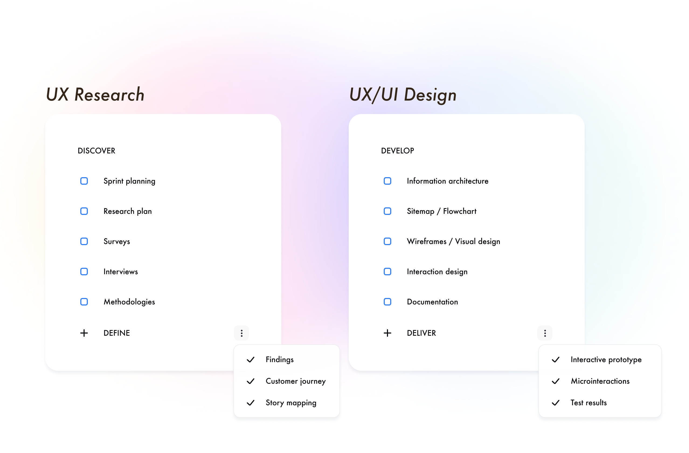
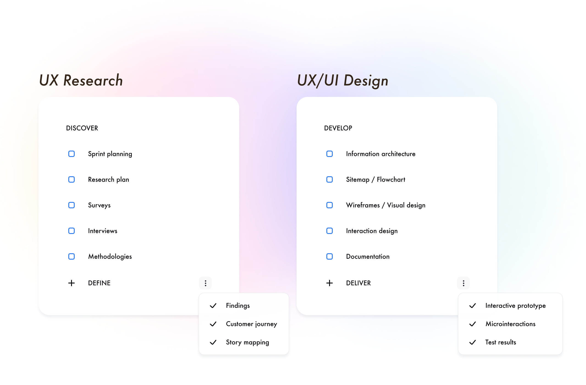

¿Por qué y cómo debemos enseñarle a los niños sobre las finanzas?.
Los problemas económicos de los padres afectan a los niños tanto socialmente como su salud mental, además el desconocimiento sobre el tema les afecta de adultos también. La metodología de enseñanza para los niños es muy distinta a la de los adultos, los niños necesitan estimulación visual, colores y formas de aprendizaje que involucran “hacer actividades en su vida diaria” para que aprendan mucho mejor y más rápido. El proyecto, que fué mi primer proyecto individual que abarcó un total de dos semanas aproximadamente, estuvo enfocado en una problemática como lo es que los padres necesitan enseñar a sus hijos finanzas desde muy temprana edad para que esto le beneficie tanto a corto como a largo plazo y no necesariamente se hace.
14 días
UX/UI Designer
Individual
 

De los padres ha intentado enseñar a sus hijos finanzas, pero no necesariamente prestan atención.
Y a pesar de esto, estos usuarios piensan que sí ha habido un cambio positivo en los niños a largo plazo.
Es muy útil al comienzo del diseño. Hay que completarlo antes de recoger los requisitos del producto y después de la investigación del usuario. Nos ayudará a detectar los problemas que debemos resolver. Este tipo de documentos si están bien realizados pueden llegar a afectar sobre la definición de requisitos del producto y a todo el proyecto en general. Funcionan mejor si se realiza tras la investigación con usuarios para que estén basados en datos reales.
Es un ejercicio de ideación individual, aunque esta metodología creativa se puede realizar de manera grupal (cada persona dibuja sus ocho ideas) para obtener y generar una mayor cantidad de ideas, y posteriormente votar entre los integrantes las mejores opciones a desarrollar.